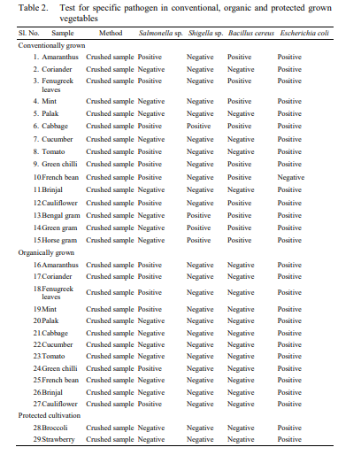

Comparem kiwis ecològics i convencionals: quin te més nutrients segons la ciencia i segons la IA
He trobat diferents articles cientifics que estudian el meu tema i els trobareu a continuació en format APA7. APA7 es una forma d'escriure un article cientific
- Maria L Amodio,Giancarlo Colelli,Janine K Hasey and Adel A Kader1(2007)A comparative study of composition and
postharvest performance of organically and conventionally grown kiwifruits,Journal of the Science of Food and Agriculture,87,9
- Sempre posem primer els autors pel cognom y les inicials del nom,després l'any entre parentesi, el titol,després el nom de la revista abreujat, el volum i les pagines que te.

En la figura x podem veure que no hi ha/ hi ha diferencies estadisticament notables entre X comvencionals i ecologics.
Obsebem que els resultats son X entre X I X de vitamina C respecte X de X